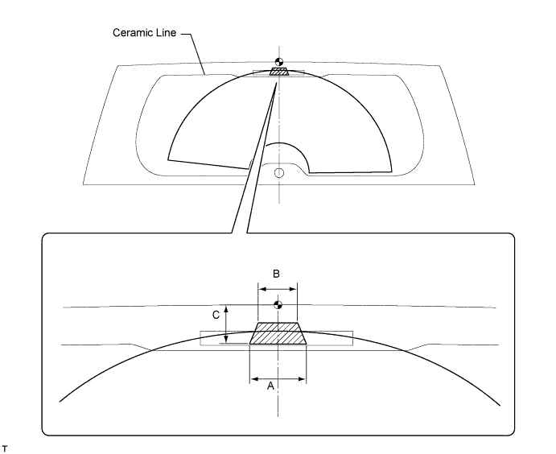

WASHER NOZZLE (for Rear Side) > ON-VEHICLE INSPECTION |
| 1. INSPECT REAR WASHER NOZZLE |
With the engine running, check that the center stream of washer fluid sprays on the windshield within the hatched area shown in the illustration.

| Area | Specified Condition |
| A | 65.8 mm (2.59 in.) |
| B | 40.5 mm (1.59 in.) |
| C | 44.9 mm (1.77 in.) |